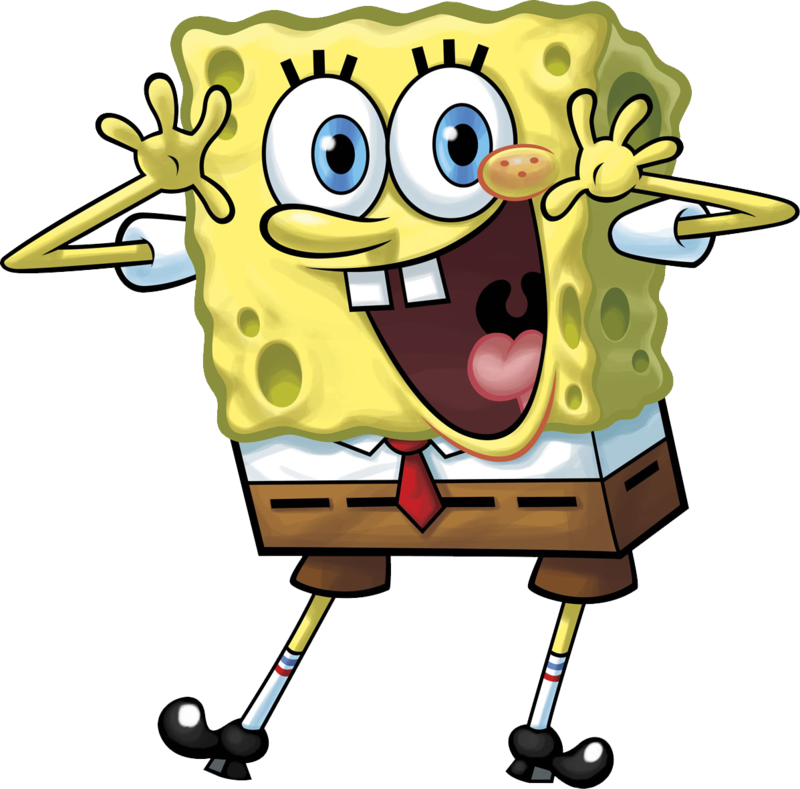

Губка Боб Квадратные Штаны
,
(полное имя — Роберт Гарольд Квадратные Штаны, англ. SpongeBob SquarePants)
— главный герой американского одноимённого мультипликационного сериала,
премьера которого состоялась 1 мая 1999 года на канале «Nickelodeon».
Персонаж был придуман морским биологом и аниматором Стивеном Хилленбергом
и озвучен актёром Томасом Кенни (в русской версии персонаж озвучен Сергеем Балабановым).
В России также известен как Спанч Боб Сквер Пентс (фонетическая транскрипция).
-
Роль в мультсериале «Губка Боб Квадратные Штаны»
-
Культурное влияние
-
Распространение
-
Восприятие
Губка Боб — морская губка, хоть и выглядит, как кухонная.
Характерные черты его внешности:
- большие голубые глаза
- много дырочек по всему телу
- рот с выступающими вперед резцами
- ямочки и веснушки на щеках
Mожет по желанию изменять форму своего тела, а также длину и форму рук, втягивать их в себя.
Обычно носит белую рубашку с коротким рукавом, красный галстук и коричневые квадратные штаны,
отсюда и его фамилия «Квадратные Штаны». Его штаны подпоясаны чёрным ремнём. На ногах — чёрные ботинки, носки с синими и красными полосочками.
Говорит высоким и тонким голосом. Очень любит петь вместе с Патриком.
Губка Боб — повар в ресторане «Красти Краб», в котором ему присуждалось звание работника месяца много,
а точнее 1 000 106 раз. Он учится в Лодочной Школе Миссис Пафф, аналог школы вождения, но никак не может получить права. Губка Боб живёт со своим питомцем — улиткой Гэри в большом «доме-ананасе» на 124 Конч Стрит в вымышленном городке Бикини Боттом,
расположенном под водой около реального тропического острова в Атолле Бикини. Его соседи: Сквидвард, осьминог, — коллега ГубкиБоба в «Красти Крабе» — кассир, который живёт в доме, похожем на статую с острова Пасхи, и Патрик, морская звезда, лучший
друг Губки Боба, с которыми его объединяют общие интересы. Сквидвард постоянно жалуется на то, что Губка Боб не даёт ему спокойно жить. Также Губка Боб умеет играть на укулеле.
Губка Боб — неуклонно оптимистичный, добрый, забавный, трудолюбивый, надёжный персонаж, однако, он слишком наивный.
Его любимые занятия включают ловлю медуз (аналогично наблюдению за птицами и ловле бабочек) и надувание пузырей с Патриком.
Он не догадывается, как Сквидвард раздражается на него. Очень часто Губка Боб бывает слишком энергичным, даже в таких делах, о которых он ничего не знает
(например, когда Сквидвард предложил ему устроить забастовку в «Красти Краб», а СпанчБоб принял предложение, не зная, что это такое).
Это вместе с его чрезмерной общительностью и дельфиноподобным смехом раздражает некоторых действующих лиц, например Миссис Пафф, Сквидварда и Планктона.
В фильме «Sponge Bob SquarePants: The Movie», а также в мультсериале (серия «Оркестр недоумков») Боб показан хорошим вокалистом и гитаристом.
Со времени показа мультсериала «Губка Боб Квадратные Штаны», персонаж Губка Боб стал очень популярен среди детей и подростков.
Популярность персонажа распространена, согласно Nickelodeon среди детей от двух до одиннадцати лет, подростков,учеников колледжей.
Salon.com отмечает, что безупречная невинность Губки Боба делает его таким привлекательным. Персонаж привлекает фанатов из-за своего яркого образа жизни и толерантного отношения.
Популярность Губки Боба хорошо показывается продажами продукции, связанной с ним. В 2002 году куклы Губки Боба Квадратные Штаны продавались в количестве 75 000 за неделю, что было быстрее, чем куклы Tickle Me Elmo. Губка Боб набирает популярность в Японии, особенно
среди японских женщин. Родительская компания Nickelodeon — Viacom целенаправленно нацеливала маркетинг на женщин в стране, как метод постройки бренда Губки Боба Квадратные Штаны. Скептики изначально сомневались, что Губка Боб может быть популярен в Японии,
так как дизайн персонажа сильно отличается от уже популярных Hello Kitty и Пикачу.
Со времени первого показа мультсериала «Губка Боб Квадратные Штаны», персонаж Губка Боб стал очень популярен среди детей и подростков.
Однако, не всё критическое восприятие персонажа является позитивным. AskMen’s Top 10: Раздражает персонаж 90-х из Cartoon Characters — Губка Боб, под номером четыре, говоря, что его хорошее значение невероятно надоедает. Интересные факты В честь Губки
Боба назван реально существующий вид грибов — Spongiforma squarepantsii. Учёные из Международного института по исследованию видов при Университете штата Аризона признали его одним из десяти самых замечательных видов живых существ, описанных в 2011 году.
добавить ссылки по странице на разделы дробавить визуального оформления — жирный, курсив. добавить ссылку на https://ru.wikipedia.org/wiki/Губка_Боб_Квадратные_Штаны_(персонаж) добавить картинку с Губкой Бобом, путь к которой будет относительный